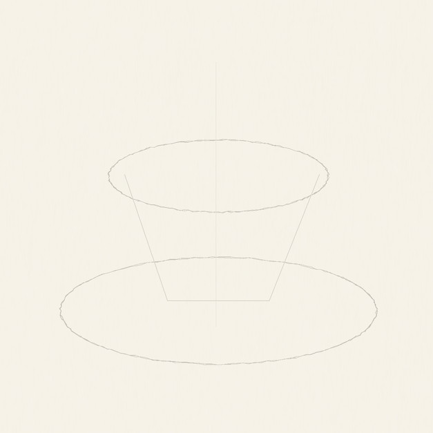
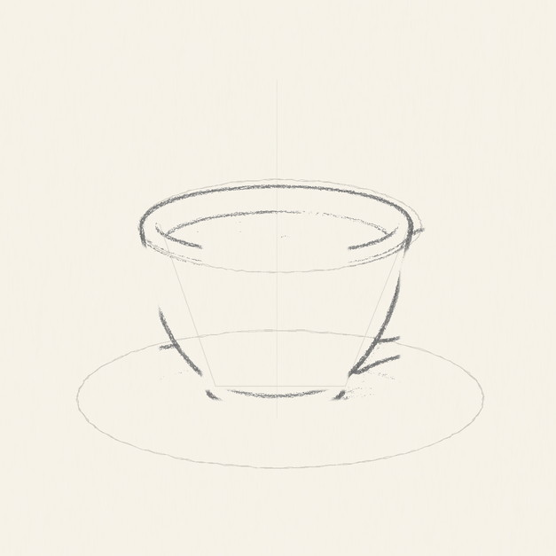
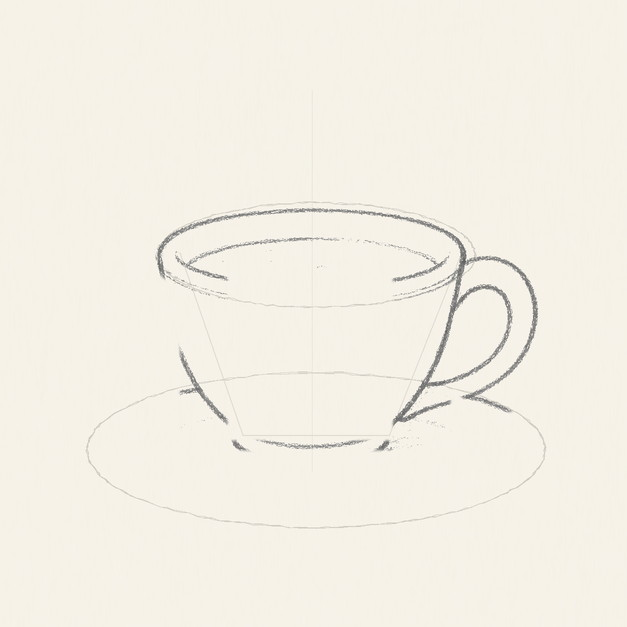
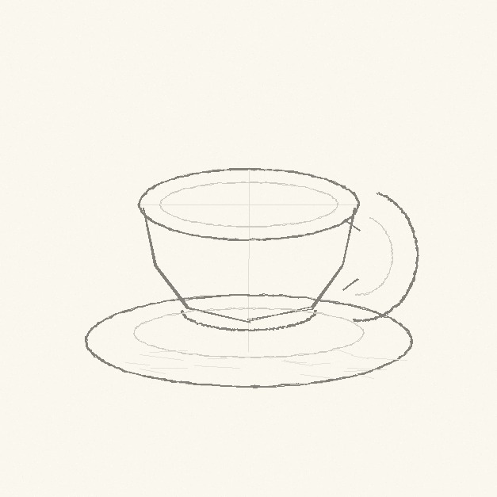
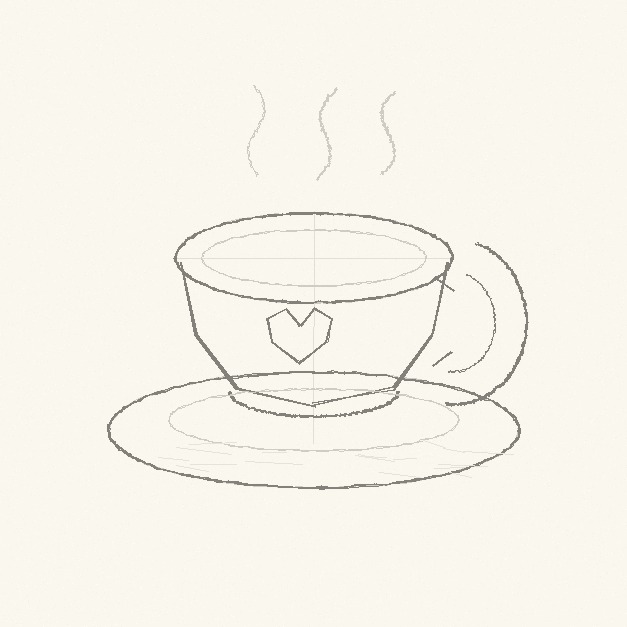
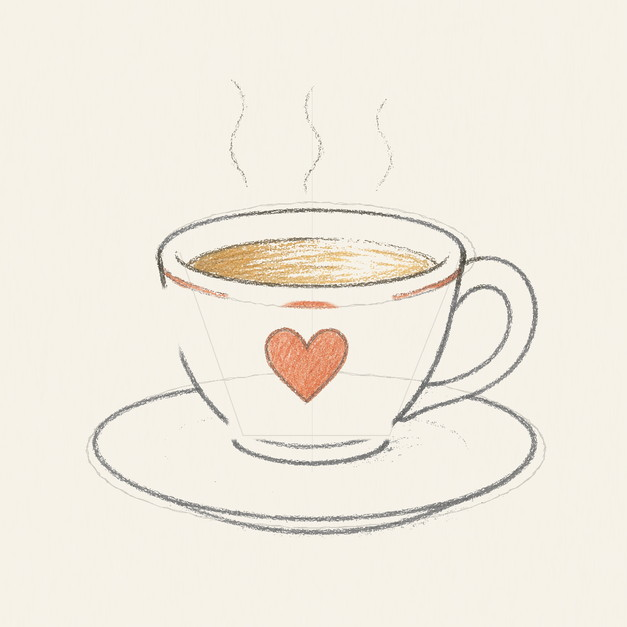

From the archive
Let's draw a cozy teacup
Work lightly through the construction, then darken only the lines that help the finished sketch.
-
01

Place the guide ovals
Draw a wide saucer oval near the bottom, then place a smaller cup-rim oval above it. Add a faint center line and light slanted cup sides.
Sketch tip: Keep every guide pale. These first lines are only there to keep the cup level.
-
02

Shape the cup and handle
Darken the front and back curves of the rim, pull the cup sides down toward a small base, then add a C-shaped handle on the right.
Sketch tip: Check both cup sides before you press harder. The handle should touch near the rim and near the lower cup.
-
03

Build the saucer
Darken the outside saucer oval, then add a smaller inner curve under the cup to show where the cup sits.
Sketch tip: Let the saucer stay flatter than the cup rim. A round saucer makes the cup look tilted.
-
04

Add tea and steam
Fill the inside of the rim with a warm tea oval, then sketch three loose steam wisps rising above the cup.
Sketch tip: Steam should be lighter and softer than the cup outline, almost like a line you might erase.
-
05

Draw the heart and rim stripe
Place a small red heart on the front of the cup, then add a thin warm stripe following the front rim curve.
Sketch tip: Center the heart on the cup face, not on the whole page. It should sit below the rim and above the foot.
-
06

Shade the cup and saucer
Add pale graphite on the cup sides, blue-gray shadow across the saucer, and a soft cast shadow below the plate.
Sketch tip: Stop before the paper turns gray everywhere. The light spaces keep the sketch friendly.
-
07
Finish the keeper lines
Choose the strongest rim, handle, saucer, steam, and heart lines, then add a few short colored-pencil strokes to tie the drawing together.
Sketch tip: The final pass should clarify the drawing, not redraw every line.